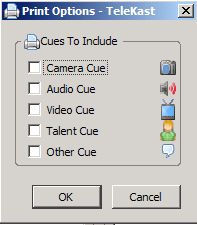

Printing
You can print in two ways.
- Choose Print from the File menu.
- Click on the Print button.
The following screen will appear:

The Print Options dialog gives you
control over what is printed from the script. Once you have made your
selection(s) and pressed OK, it will present to you the printer dialog.
Each segment of the script is numbered beginning with one. This can
help your staff easily communicate what segments need to be worked on.
For example, if you are practicing and you would like to go back to
segment five, everyone would know where in the script the fifth segment
is. Even the teleprompter feature numbers the segments on the screen.